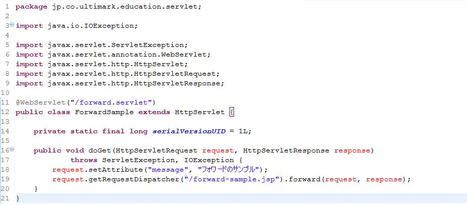
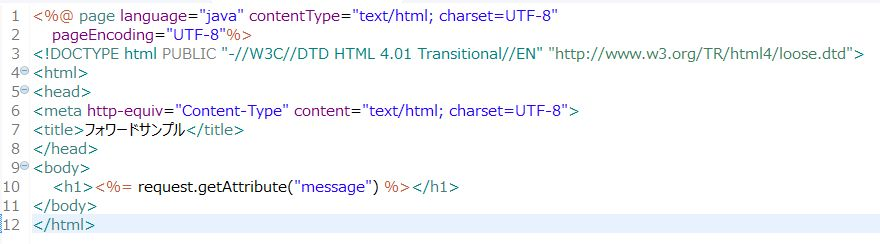
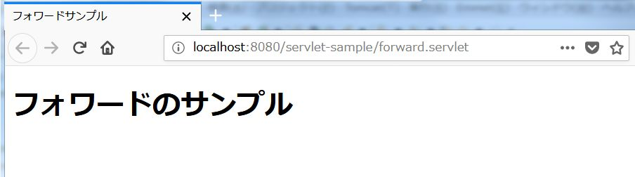
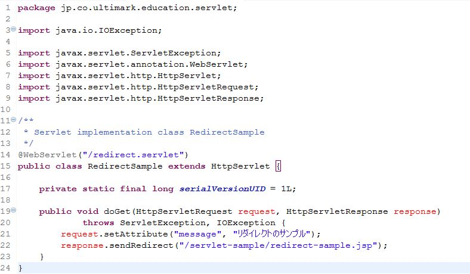
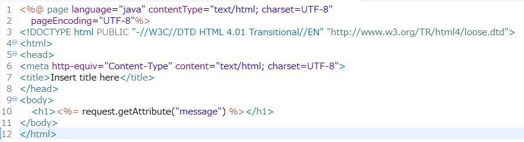
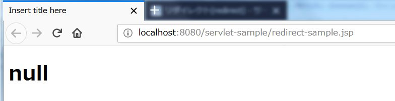
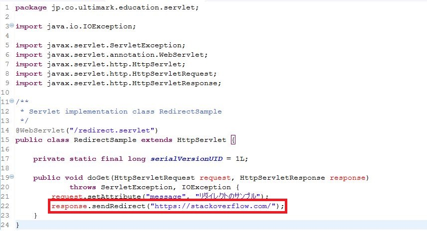
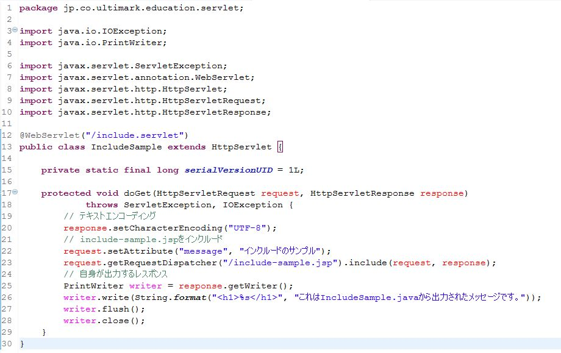
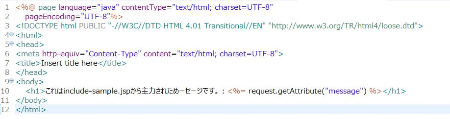
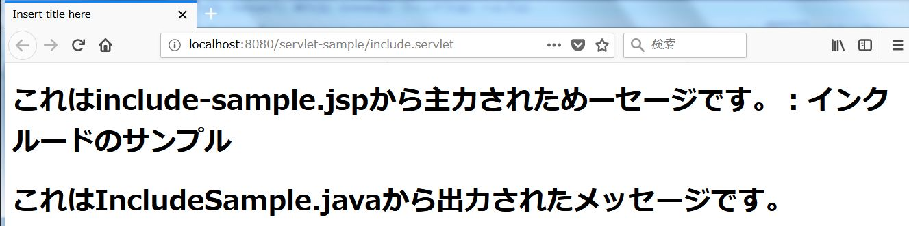

サーブレットでは画面遷移の方法として以下の3つの方法が用意されています。
今回はこれら3つの画面遷移の方法について詳しく解説していきます。
フォワードはWebアプリケーションにおいては最もスタンダードな画面遷移の方法といえます。画面遷移というよりはリクエストを転送するといった方が実態をよく表しているかもしれません。HttpServletRequestオブジェクト、HttpServletResponseオブジェクトを転送先に引き継ぐことができる一方で、同一サーバー内にしかリクエストを転送することができません。フォワードを使うにはRequestDispatcherオブジェクトを利用します。RequestDispatcherオブジェクトはHttpServletRequestオブジェクトから取得することができます。
RequestDispatcher requestDispatcher = request.getRequestDispatcher(String path);
getRequestDispatcherメソッドの引数は転送先のURLです。コンテキストルートからの相対パスを指定します。転送先のURLに完全に処理を委譲してしまい、転送元のサーブレットには制御が戻ってきません。サーブレットで処理した結果をJSPで出力するような用途に用いられます。それでは実際にフォワードの動きを確認してみましょう。サンプルを作成してみます。
リクエスト転送先はJSPで作成してみます。
/forward.servletにリクエストがあると、リクエスト属性に"message"という名前で"フォワードのサンプル"という文字列を追加した上でforward-sample.jspにリクエストを転送しています。forward-sample.jspではリクエスト属性に"message"という名前で保存されている文字列を表示しています。実際に/forward.servletにリクエストを送ってみた結果が以下になります。
注目すべき点は2つあります。1つはforward-sample.jspで定義した出力内容が画面に表示されている点、もう1つはブラウザのアドレスバーに表示されているURLが/forward.servletのまま変わっていない点です。画面遷移と考えると不可解な動きですが、実際はTomcat内でリクエストが転送されているのみで、Webサーバーへのレスポンスはサーブレットが返しているためにこのような現象が発生します。これはサーブレットが自身が返すべきレスポンスにforward-sample.jspの出力内容を利用しているだけであり、forward-sample.jspにリクエストが転送されたことをWebサーバーもWebクライアントも知らないということを意味します。
リダイレクトは一旦Webクライアントにレスポンスを返し、その上で指定したURLに遷移させるという動きをします。従って、Webクライアントは転送先のURLを知っているということになります。一方でWebブラウザの機能を使って画面遷移を実現している都合上、リクエストの引継ぎができません。これも実際にサンプルを見てみましょう。
リダイレクトを実行するにはHttpServletResponseオブジェクトのsendRedirectメソッドに転送先のURLを渡します。この時のURLとはコンテキストルートからの相対パスではなく、サーバーからの相対パスになります。これは、転送先のURLを特定するのはWebブラウザで、Webブラウザはコンテキストルートを知らないため、コンテキストルートからの相対パスを解釈できないためです。
こちらはリダイレクト先となるJSPのサンプルです。10行目でリクエスト属性に保存されたオブジェクトを取得しようとしています。サーブレット側で"リダイレクトのサンプル"という文字列が保存されていますので、リクエストが引き継がれていれば"リダイレクトのサンプル"という文字列が表示されるはずです。実際に試してみましょう。
こちらも注目すべき点は2つです。1つは"リダイレクトのサンプル"ではなくnullと表示されている点で、これはリクエスト属性から"message"という名前でオブジェクトが取得できていないことを意味します。もう1つはブラウザのアドレスバーに表示されているURLがredirect-sample.jspになっている点です。これはWebブラウザ自身がredirect-sample.jspにリクエストを送っていることを意味します。redirect-sample.jspにリクエストを送っている主体はサーブレットではなくWebブラウザですからサーブレット側で設定したリクエスト属性が取得できないということになります。Webブラウザの機能で画面遷移をさせていますので、外部サイトにも遷移することが可能です。これも試してみましょう。サーブレットを以下のように修正します。
この状態で/redirect.servletにリクエストを送ってみます。
HttpServletRequestオブジェクトが引き継がれないかわりに、外部サイトへの遷移が可能になっています。ただ、データが引き継げないので業務アプリケーションにおける用途は限定的です。
インクルードのリクエスト転送方式はフォワードと変わりありませんが、インクルード先からインクルード元へ制御が戻ってくるという決定的な違いがあります。このため、サーブレット側から見ると自身が返すべきレスポンスに別のサーブレットやJSPの出力結果を含めるような動きが可能となります。しかし、これを体感的に理解するのは難しいかもしれません。サンプルを見てみましょう。
インクルードされるJSPは以下のとおりです。
include-sample.jspにリクエストを送った後、サーブレット自身もPrintWriterオブジェクトを使って画面表示を行おうとしています。それではinclude.servletにリクエストを送ってみます。
インクルードされたJSPの出力内容とサーブレット自身の出力内容が両方画面に表示されていることが確認できると思います。フォワードと同様にブラウザのアドレスバーに表示されているURLはinclude.servletから変わっていません。この点はフォワードと同様なのですが、インクルードの場合はインクルード先の出力結果も含めて自身の出力結果も表示させるといったようなことができます。これを更に突き詰めると、複数のJSPの出力結果を1つのWebページとして出力することも可能です。
画面遷移とはいっても、リダイレクト以外はアプリケーションサーバー内でリクエストを転送し、レスポンスは最初にリクエストされたURLから返されているということが分かりました。この仕組みをしっかりと頭に入れておくと、必然的にリクエストが生存する期間（スコープ）を意識せざるを得ません。次回は複数のリクエストにまたがって情報を保持する仕組みであるセッションについて解説していきます。